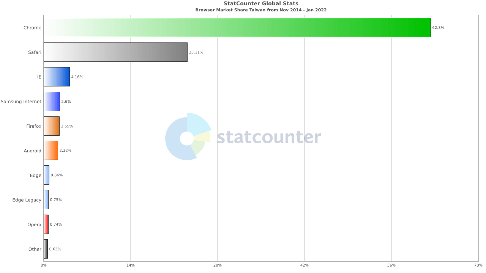

2022 年網站開發的基準（The baseline for web development in 2022）

本篇文章是由 Line 前端工程師 - Alan Dávalos 所分享，這裡只有節錄幾個重點，想看更多細節可以看原始的文章唷
目錄
Internet Explorer 瀏覽器宣告退役
微軟於 2021 年 5 月宣布了這個消息，包括 Microsoft 365 在內的許多微軟產品已正式放棄對 IE 的支持。
在主動宣布完這個消息後，隨後 Google 也跟著放棄 Google Search 對 IE 的支援服務。 在日本 Yahoo! JAPAN 更是把 IE 列為 non-recommended(不推薦) 的瀏覽器。
以目前來說，無論是網路巨擘 Google 還是整個 Internet 的大環境都不再使用這個瀏覽器服務，那我們台灣呢？🥲 🥲 🥲
台灣政府的矛盾
行政院：政府不怕 IE 死掉，各機關 600 官網都支援其他瀏覽器 - Inside 2020
上圖為台灣在 2014 ~ 2022 瀏覽器的使用分佈概況。
政府不斷地鼓吹創業風潮，但卻長期被微軟綁架！過往大部分的公務機關網頁限定只能使用 IE 瀏覽器，因為 Mobile 服務以及整個生態圈成長，在通用的準則之下以 HTML5（HyperText Markup Language 5）搭配 ECMAScript 得以在各瀏覽器通用，才逐漸改善這問題。
我認為微軟之所以改不上市場上的變革，主要歸納於 2 個原因：
- 微軟在前幾年積極發展 Cloud Service(雲服務), 忽略了其他競品(Chrome, Safari, Firefox)快速在市場擴增，因而錯失了迭代優化 IE 的大好時機。
- 整個生態系的急速增長（網頁技術, Mobile first, Chrome 瀏覽器的良好使用體驗）
BTW, 前陣子我也剛從肥大的 Chrome 轉移到 Edge, 在轉移上很方便且更輕量不佔電腦資源 👍🏾 👍🏾
Web Standard 測試

這張圖的數字表示 Web Standard 測試的失敗數量：
- Safari (3524)
- Firefox (1473)
- Chrome (724)
由於 Safari 會隨著系統更新而更新，只需要支援近 2 年發布的 Safari 版本即可。
Others
- 最低規格的 Android 是效能評測的基準
- 行動網路以 4G 為基準。（5G 的使用率不高沒什麼好參考的，全球最高的韓國也才 29.1%
- 最多人使用的 JS Lib 是以 jQuery(84%) 為最大宗，而 Wordpress(33%)
- 網站效能的基準上 - HTML/CSS < 100kb, JS < 350kb
－Framework 的效能

- Solid / Svelte 最接近 Vanilla JS(Native Script)
- React / Angular 在效能上有明顯的影響（平均效能是 Vanilla JS 的 2 倍）
- 2021 年的中間值是 414 KB(不分Lib, Framework), 但 Vue 和 React 的中間值都在 690 KB 左右。比整體中位數高出 250 KB 以上